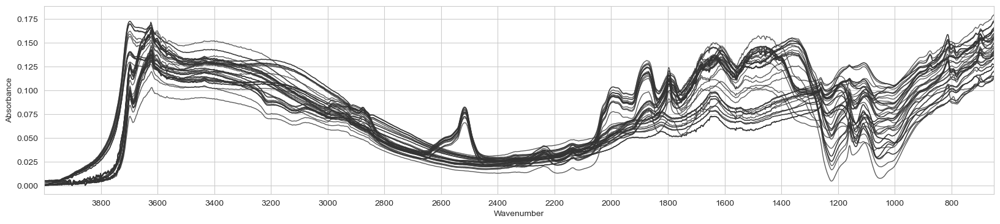

The autoreload extension is already loaded. To reload it, use:
%reload_ext autoreloadThe autoreload extension is already loaded. To reload it, use:
%reload_ext autoreloadfrom lssm.loading import load_ossl, load_mir_kex_spike, load_nir_kex_spike
from lssm.visualization import plot_spectra
from sklearn.pipeline import Pipelinewl_to_wn (wavelength:float)
Convert wavelength to wavenumber.
| Type | Details | |
|---|---|---|
| wavelength | float | wavenumber in nm |
| Returns | float | wavenumber in cm^-1 |
ToAbsorbance (eps=1e-05)
Transform Reflectance to Absorbance
Example:
analytes = 'k.ext_usda.a725_cmolc.kg'
data = load_ossl(analytes, spectra_type='visnir')
X, y, X_names, smp_idx, ds_name, ds_label = dataReading & selecting data ...plot_spectra(ToAbsorbance().fit_transform(X), X_names)<Figure size 640x480 with 0 Axes>ContinuumRemoval (wls)
Creates continnum removal custom transformer
Example:
pipe = Pipeline([('to_abs', ToAbsorbance()),
('cr', ContinuumRemoval(X_names))])
plot_spectra(pipe.fit_transform(X), X_names)100%|███████████████████████████████████████████████████████████████████████████████████████████████████████████████████████████████████████████████████████████████| 44489/44489 [00:15<00:00, 2808.72it/s]<Figure size 640x480 with 0 Axes>SNV ()
Creates scikit-learn SNV custom transformer
pipe = Pipeline([('to_abs', ToAbsorbance()),
('cr', ContinuumRemoval(X_names)),
('snv', SNV())])
plot_spectra(pipe.fit_transform(X), X_names)100%|███████████████████████████████████████████████████████████████████████████████████████████████████████████████████████████████████████████████████████████████| 44489/44489 [00:15<00:00, 2850.45it/s]<Figure size 640x480 with 0 Axes>Log1p ()
Creates scikit-learn np.log1p target custom transformer
SpikeDiff (names)
*Scikit-learn transformer for taking the difference of spiked sample spectra.
Attributes: names (list): List of names to be processed. idx (numpy.ndarray): Indices for differences in spectra.*
TakeDerivative (window_length=11, polyorder=1, deriv=1)
*Creates scikit-learn derivation custom transformer
Args: window_length: int, optional Specify savgol filter smoothing window length
polyorder: int, optional
Specify order of the polynom used to interpolate derived signal
deriv: int, optional
Specify derivation degreeReturns: scikit-learn custom transformer*
src_dir = Path().home() / 'pro/data/k-spiking/mir'
X, wavenumbers, names = load_mir_kex_spike(src_dir)plot_spectra(TakeDerivative().fit_transform(X), wavenumbers)<Figure size 640x480 with 0 Axes>MinScaler ()
*Base class for all estimators in scikit-learn.
Inheriting from this class provides default implementations of:
GridSearchCV and friends;Read more in the :ref:User Guide <rolling_your_own_estimator>.*
plot_spectra(MinScaler().fit_transform(X), wavenumbers, ascending=False)<Figure size 640x480 with 0 Axes>
MeanCenter ()
*Base class for all estimators in scikit-learn.
Inheriting from this class provides default implementations of:
GridSearchCV and friends;Read more in the :ref:User Guide <rolling_your_own_estimator>.*
plot_spectra(MeanCenter().fit_transform(X), wavenumbers, ascending=False)<Figure size 640x480 with 0 Axes>
plot_spectra(X[1], wavenumbers, ascending=False)<Figure size 640x480 with 0 Axes>BaselineALS (lam=100000.0, p=0.01, niter=10)
*Base class for all estimators in scikit-learn.
Inheriting from this class provides default implementations of:
GridSearchCV and friends;Read more in the :ref:User Guide <rolling_your_own_estimator>.*
plot_spectra(X, wavenumbers, ascending=False)<Figure size 640x480 with 0 Axes>plot_spectra(BaselineALS().fit_transform(X), wavenumbers, ascending=False)100%|███████████████████████████████████████████████████████████████████████████████████████████████████████████████████████████████████████████████████████████████████████| 58/58 [00:00<00:00, 82.47it/s]<Figure size 640x480 with 0 Axes>Interpolate (old_indexes:numpy.ndarray, new_indexes:numpy.ndarray)
Interpolate data according to new indices
| Type | Details | |
|---|---|---|
| old_indexes | ndarray | Old wavenumbers or wavelength |
| new_indexes | ndarray | New wavenumbers or wavelength |
SpikeMean (names)
*Base class for all estimators in scikit-learn.
Inheriting from this class provides default implementations of:
GridSearchCV and friends;Read more in the :ref:User Guide <rolling_your_own_estimator>.*
scan_type = 'MIR'
if scan_type == 'MIR':
src_dir = Path().home() / 'pro/data/k-spiking/mir'
X, wavenumbers, names = load_mir_kex_spike(src_dir)
else:
fname = Path().home() / 'pro/data/k-spiking/nir/2023-12-8 _FT-NIR-K-spiked soil.xlsx'
X, wavenumbers, names = load_nir_kex_spike(fname)X_mean, names_mean = SpikeMean(names).fit_transform(X)
print(f'X shape: {X_mean.shape}')
print(f'Sample names: {names_mean}')X shape: (12, 1738)
Sample names: ['LUI-0' 'LUI-1' 'LUI-2' 'LUI-3' 'SPA1-0' 'SPA1-1' 'SPA1-2' 'SPA1-3'
'TM4.1-0' 'TM4.1-1' 'TM4.1-2' 'TM4.1-3']# class SpikeDWT(BaseEstimator, TransformerMixin):
# def __init__(self,
# names,
# wavenumbers,
# top_percentile=1,
# levels=range(4, 9),
# wavelet_name='db1'):
# fc.store_attr()
# self.data = {'level': [], 'smp_name': [],
# 'wavenumber': [], 'coeff': [],
# 'resolution': [] # in wavenumbers
# }
# X_mean, names_mean